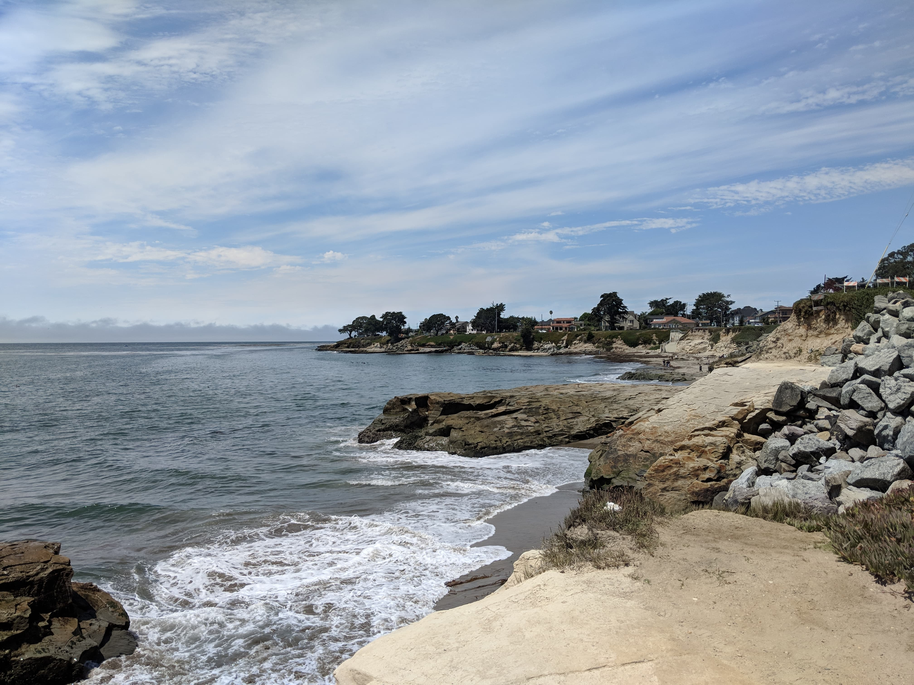

Hello World! I'm Janice Chan
here are some bits and pieces about me...
- 000. I've loved solving puzzles since I was a kid. My favorite genre of books was mystery, and my favorite genre of movies is still crime thriller.
- 001. I'm a huge foodie and indulge in sampling specialties from different cuisines.
- 010. One of my goals is to experiment with as many recipes as possible by mix-and-matching my minimal ingredients.
- 011. In order to binge watch dramas efficiently, I breeze through episodes by skipping boring parts.
- 100. I love adventures even though I'm geographically challenged.
- 101. I'm afraid of heights, but I suppress my fear so I can admire the views from the top.
- 110. I'm a big fan of bad puns.
- 111. I hope you enjoyed reading this byte-sized list. Thanks for visiting my site!
